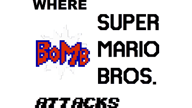

Created by Spencer Everly
When Mario was trying to stop Larry from infiltrating Princess Peach's castle, Larry casts a spell to randomize the world! It is up to Mario to save himself, and beat his way out of the randomness!
For the credits of this episode, refer to the "_CREDITS.txt" file in the SMAS++ episode folder.